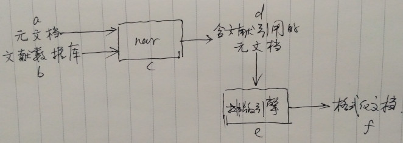
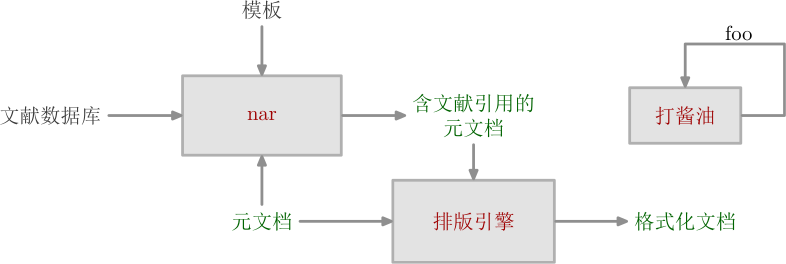

流程图


\usemodule[zhfonts] \defineframed [myframe] [frame=off, offset=overlay, width=2.5cm, autowidth=force, align={middle, lohi, broad}] \startMPpage input chart.mp; % 结点 picture a, b, c, d, e, f; a := data("元文档"); b := put(data("文献数据库"), a, "bottom", 0.3cm); c := put(procedure("nar", like(a +++ b)), a +++ b, "right", hgap); d := put(data("\myframe{含文献引用的元文档}"), c, "right", hgap); e := put(procedure("排版引擎", like(c)), d, "bottom", vgap); f := put(data("格式化文档"), e, "right", hgap); % 出射锚点 pair a.out, b.out, c.out, d.out, e.out; a.out := out(a, "right", 0, margin); b.out := out(b, "right", 0, margin); c.out := out(c, "right", 0, 0); d.out := out(d, "bottom", 0, margin); e.out := out(e, "right", 0, 0); % 入射锚点 pair c.a.in, c.b.in, d.in, e.in, f.in; c.a.in := in(c, "left", a.out, 0); c.b.in := in(c, "left", b.out, 0); d.in := in(d, "left", c.out, margin); e.in := in(e, "top", d.out, 0); f.in := in(f, "left", e.out, margin); % 绘制流程图 for i = a, b, c, d, e, f: draw i; endfor; a.out ==> c.a.in; b.out ==> c.b.in; c.out ==> d.in; d.out ==> e.in; e.out ==> f.in; \stopMPpage
chart.mp:
tertiarydef a ==> b = drawarrowpath a -- b; enddef;
tertiarydef a +++ b = image(draw a; draw b;) enddef;
vardef like(expr box) =
save p; path p;
p := (llcorner box) -- (ulcorner box) -- (urcorner box) -- (lrcorner box) -- cycle;
p := p shifted -(center box);
p
enddef;
vardef data(expr s) =
image(draw textext(s) withcolor datacolor;)
enddef;
vardef procedure(expr s, canvas) =
image(fill canvas withcolor backgroundcolor;
drawpath canvas withcolor linecolor;
draw textext(s) withcolor procedurecolor;
)
enddef;
vardef put(expr p, ref, toward, offset) =
save center_of_ref, center_of_p, d;
pair center_of_ref, center_of_p; numeric d;
center_of_ref := center ref;
if toward = "left":
d := xpart center_of_ref - 0.5(bbwidth ref) - 0.5(bbwidth p) - offset;
center_of_p := (d, ypart center_of_ref);
elseif toward = "right":
d := xpart center_of_ref + 0.5(bbwidth ref) + 0.5(bbwidth p) + offset;
center_of_p := (d, ypart center_of_ref);
elseif toward = "top":
d := ypart center_of_ref + 0.5(bbheight ref) + 0.5(bbheight p) + offset;
center_of_p := (xpart center_of_ref, d);
elseif toward = "bottom":
d := ypart center_of_ref - 0.5(bbheight ref) - 0.5(bbheight p) - offset;
center_of_p := (xpart center_of_ref, d);
fi;
p shifted center_of_p
enddef;
vardef out(expr p, base, location, margin) =
save edge_origin, anchor, ll, ul, ur, lr;
pair edge_origin, anchor, ll, ul, ur, lr;
ll := llcorner p; ul := ulcorner p; ur := urcorner p; lr := lrcorner p;
if base = "left":
edge_origin := 0.5[ll, ul];
if location >= 0:
anchor := location[edge_origin, ul];
else:
anchor := location[ll, edge_origin];
fi;
anchor := (xpart anchor - margin, ypart anchor);
elseif base = "right":
edge_origin := 0.5[lr, ur];
if location >= 0:
anchor := location[edge_origin, ur];
else:
anchor := location[lr, edge_origin];
fi;
anchor := (xpart anchor + margin, ypart anchor);
elseif base = "top":
edge_origin := 0.5[ul, ur];
if location >= 0:
anchor := location[edge_origin, ur];
else:
anchor := location[ul, edge_origin];
fi;
anchor := (xpart anchor, ypart anchor + margin);
elseif base = "bottom":
edge_origin := 0.5[ll, lr];
if location >= 0:
anchor := location[edge_origin, lr];
else:
anchor := location[ll, edge_origin];
fi;
anchor := (xpart anchor, ypart anchor - margin);
fi;
anchor
enddef;
vardef in(expr p, base, mate, margin) =
save anchor, ll, ul, ur, lr;
pair anchor, ll, ul, ur, lr;
ll := llcorner p; ul := ulcorner p; ur := urcorner p; lr := lrcorner p;
if base = "left":
anchor := (xpart ll - margin, ypart mate);
elseif base = "right":
anchor := (xpart lr + margin, ypart mate);
elseif base = "top":
anchor := (xpart mate, ypart ul + margin);
elseif base = "bottom":
anchor := (xpart mate, ypart ll - margin);
fi;
anchor
enddef;
%%%%%%%%%%%%%%%%%%%%%%%%%%%%%%%%%%%%%%%%%%%%%%%%%%%%%%%%%%%%%%%%
% 样式
color datacolor, procedurecolor, linecolor, backgroundcolor;
datacolor := .375darkgray;
procedurecolor := darkred;
linecolor := .8darkgray;
backgroundcolor := .8white;
drawpathoptions(withpen pencircle scaled 1.5 withcolor linecolor);
% 留白与间距尺寸
numeric margin, hgap, vgap;
margin := 4; hgap := 1.5cm; vgap := 0.75cm;
%%%%%%%%%%%%%%%%%%%%%%%%%%%%%%%%%%%%%%%%%%%%%%%%%%%%%%%%%%%%%%%%